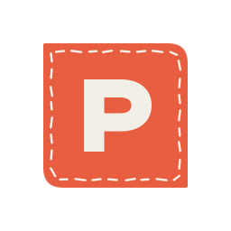

A little help,
from a friend.
Soft green ink on warm paper, and one stitched patch shape for the mark, the buttons and their shadows.
These are component examples, not a working page. Each button face and its offset shadow have the same asymmetric corners.